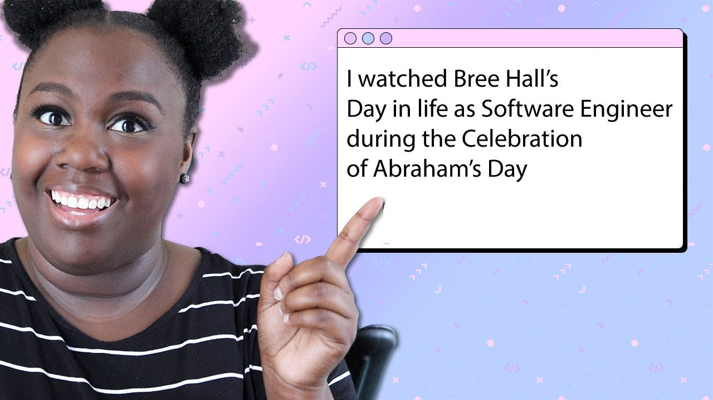

Jul 10
Watched Bree Hall's Day in Life during The Celebration of Abraham’s Day

May God provides ever more peace and happiness to every living and nonliving parts of the world, as a believer I am among those who think and believe that God increasingly always do provide us good things and peace even if we may see some wars around the world and experience some matters and concerns make us awake at night if we are positive we could imagine that it was possible for the world to be a worse place. This article as the flavor of all these greyio heart experiment articles about all these female software engineers because I started it watching this video of Bree Hall showing what her day in life as software engineer looks like.
Then I am dedicating this article to Bree Hall like how I dedicated an article to :
Mbenda N’dour, Giogia Lupi, Nici kelly, Nakeisha Washington, Laura Huang, Bernadette Jiva, Cathy heller, Mersedes Henderson, Amina Yonis, these female American champions, Mishka Rana, Dels Ogun, Maisy Leigh, Beate Chelette, Meezy, Misty Davies, Ashley Maria, Tsedal Neely, Mayuko, Bozoma Saint-John, Maya Bello, Kara Swisher, Sarah Kunst, ………
all of them women and most of them female software engineers but every one of them contributing like you to the building of a better world each given her level of responsibilities and skills, this professionally, publicly and privately because I also believe that all of us whatever positive things we are doing are contributing the well being of our world and for that we each merits positive words of encouragements and thankings. So thank to all of you because without your contribution maybe I would not be sitting there and writing for you to read.
I even still don’t know what to say in this paragraph after I ended the one above during which I got interrupted by a call from which was about inquiring about my news and sharing positive words of blessings because this day of July 10 or July 9 given where one is, is a meaningful and important day not only for Muslims but for all human beings be them believers of God or not because this day is about celebrating our great and grandparent Abraham who is said to be the friend of God. Let’s look at all the paths we have taken from Adam and Eve all the way down to this time and space we live in now and be positive by acknowledging that it could have been worst and that what’s next could always be better. Watching video of people like …. is to some extent about that, meaning about sharing an empathic signal of positiveness that could motivate everyone who watches it and help each acknowledge that what they are dreaming of and planning is achievable given that it has a positive impact on our society and the little knowledge I have tells me that you all have positive thinking, dreams, and ideas then all I advice you is to never give up these because hard times for that I strongly believe that positive and happy times are coming for all of us and this could be happen right now while you are reading me.
As I already stated the Greyio Heart Experiment flavor of this article then let me look at a bit of information about Bree Hall and write some words about her I have dedicated this article to her. I have watched only this day-in-life software engineer video of Bree but the first signal that hit my heart positively is this sequence that tells a lot about diversity and multiculturality
if you watch the trimmed video above you could see Bree Hall got help from her partner. That’s how life works. We often need help and the genre and race of the one who could provide this bit of help have no importance because whites and blacks, women and men, we all are the same creative people contributing to a better world.
One of the most important and existing benefits of the internet is that it gives us the opportunity to listen to others' thoughts and opinions and to even watch what their lives look like because they have given us the chance to know by sharing their lives and all lives matter if we really want to benefit from the wisdom of the crowd for perfecting our own selves and our society. I Have tried to quantify my writing and publishing with this subproject of this publishing project that is Book Dojo but I can’t quantify how many things I have learned on the internet thanks to people who decided to share and most of them win financially almost nothing doing it but what they gain deep inside their gut and self is as big and unquantifiable than what I have learned from them. Then thank, Merci, to all of you who are using the medium of the web for sharing. Sharing knowledge, sharing ideas, sharing solutions, and even sharing your hard-earned money through crowdfunding platforms and creators supporting platforms like buymeacoffee. By the that's only today that I opened one which is here and twitted about it.
When we were isolated tribes of people it was may safer and better for us to think that as a tribe we were different than other tribes but now that the world is wired and all these tribes are connected we got to see how our behaviors and beneath consciousness are the same even if experts have highlighted how the internet has broken us again down to many more geographically dispersed micro tribes very often based not on races and ethnic identities but on passions and interests what made our world more diverse what provided us more answers to our questions as a society. With diversity, we are more likely to have answers to our questions this scene of Bree Hall and his partner (husband) is I think a good example.
I decided to end this short sharing here even if I was able to spend more time on it and make it longer but I think that from there you gt all the ideas that this article is about speaking about us as a unique society made of people, each with somethings different but that’s what makes the world exciting because we are constrained to puzzle ourself every day to fit the instant without this constant need of adaptation, I think that the world would be boring and no one wants boring things.
So I say Thank you to Hall Bree, his partner, and to all of you on this day which means something for me and I hope for you also.
Thank You